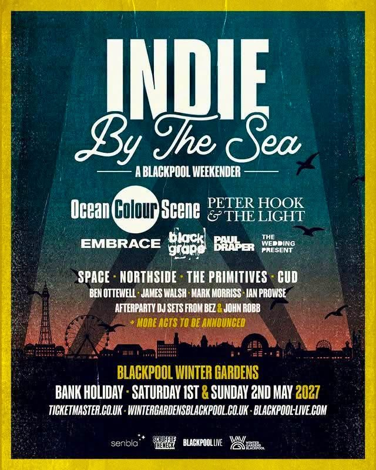

Flagship Music Collection
Enter Collection →
Paul Draper Archive
The master 12-page dedicated collection: 35 news dispatches (2003–2012), 38 forum Q&As, studio diaries, magazine spreads, and solo discography.
Preserving music history, live recordings, broadcast recordings, archive footage, and community memories. Dedicated to cultural continuity, permanent audio preservation, and independent discovery.
The RJMedia Digital Archive is an independent cultural institution dedicated to rescuing, cataloguing, and providing free public access to rare British rock history, master concert tapes, broadcast documentaries, and lost recordings.
Founded from over 25 years of fan archive curation, RJMedia bridges the gap between deteriorating physical media (VHS, cassette, studio DAT, bootleg pressings) and modern high-definition streaming. We believe cultural preservation must remain non-commercial, open, and permanently discoverable.
Migrating physical studio recordings, radio sessions, and live master tapes into permanent digital archives.
Contextualizing rare footage with historical liner notes, setlists, and original press materials.
Providing a space where audiences, musicians, and historians connect and keep independent culture alive.
The master 12-page dedicated collection: 35 news dispatches (2003–2012), 38 forum Q&As, studio diaries, magazine spreads, and solo discography.
Comprehensive boxset details, 17 numbered EPs, 1998 Six Soundmasters reference inlays, and the original "Outsider Thing" band history.
Front-row audio recordings from Brixton Academy '98, Manchester Academy 2026, Reading Festival '99, and Amsterdam Paradiso soundboard tapes.
Restored BBC Radio 1 John Peel Sessions (7/10/1995), Evening Session tapes, Later with Jools Holland appearances, and TFI Friday broadcasts.
Full-length music films including Peter Green: A Hard Road (179,000+ views), The Smiths Rockpalast '84 restoration, and studio retrospectives.
25 years of fan community memories, the original MansunMusicLovers Yahoo! Group logs (Dec 2001), and the Keep The Connection advocacy space.
Paul Draper is scheduled to perform at the Indie By The Sea festival at Winter Gardens Blackpool on Saturday, 1 May 2027. Doors open at 2:00 pm for the May Bank Holiday weekender.

From the August 2014 world premiere of "Feeling My Heart Run Slow" at the Chester Mansun Convention to two UK Top 25 studio albums on Kscope. Preserved with high-fidelity sleeve artwork:


Instead of isolated search results, follow curated historical journeys loaded dynamically from /assets/data/memory-trails.json. Click any milestone node to jump directly into the archive.
Visualising the relationships between artists, BBC sessions, magazine features, tours, venues, and 25 years of community preservation. Hover over any star node to inspect its connections or click to explore.
Tracks how the 1998 BBC Interview & 2014 Chester premiere echo through 2003 solo sessions, the 2006 fan Q&A, Kscope albums, and Blackpool 2027.
Automatically surfaces historical anniversaries: Nov 1996 Stripper Vicar Melody Maker shoot (30 yrs) & Nov 1998 Six UK Tour (28 yrs).
Prioritises single-copy reference CDs (1998 Soundmasters Ref: 98/100) and retired web captures (2006 Q&A: 96/100) before they disappear.
RJMedia is 100% free, publicly accessible, and independent. We rely on community patronage, institutional sponsorships, and equipment donations to fund server hosting, tape digitisation, and AI audio remastering.
Directly fund digital storage, bandwidth, and tape preservation.
Partner with RJMedia to support major documentary releases.
Support audio capture cards, NVMe storage, and GPU compute.
Connect with collectors, historians, and fans. Request rare recordings, report lost media, and join specialized discussions across 9 dedicated categories:
Independent research into local AI memory engines, real-time VRAM telemetry, inference scheduling, and open-source restoration pipelines.